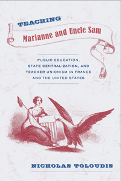

<body bgcolor="#FFFFFF" text="#000000" link="#0000FF" vlink="#CC0000" alink="#CC0000"><center><hr width="350" size="1" align="center" noshade>A comparative historical study of the rise of teacher power and the state in France and the United States<hr width="350" size="1" align="center" noshade><p><a href="https://cdcshoppingcart.uchicago.edu/Cart/ChicagoBook.aspx?ISBN=9781439909065&&PRESS=temple" target="_top">Buy this book!</a> | <a href="https://cdcshoppingcart.uchicago.edu/Cart/Cart.aspx?PRESS=temple" target="_top">View Cart</a> | <a href="https://cdcshoppingcart.uchicago.edu/Cart/Cart.aspx?PRESS=temple" target="_top">Check Out</a></p><p></p></center><!--none//--><h1>Teaching Marianne and Uncle Sam</h1>
<H2>Public Education, State Centralization, and Teacher Unionism in France and the United States</H2>
<h3>Nicholas Toloudis</h3>
<P>cloth 1-43990-906-7 $65.50, Aug 12, <FONT COLOR=#990033>Available</FONT>
<br>Electronic Book 1-43990-908-3 $65.50 <FONT COLOR=#990033>Available</FONT>
<BR> 230 pp
6x9
5&nbsp;tables
</P><BLOCKQUOTE><I>"</I>Teaching Marianne and Uncle Sam<I> is a well-written, well-researched, and fascinating book that offers an original take on teacher mobilization in France and the United States. The book also compellingly deals with broader theoretical issues, such as the impact of political centralization on social mobilization and the role of selective engagement in labor politics. Teachers and union representatives will find this book informative, as will historians, sociologists, and political scientists interested in education policy and politics. </I>Teaching Marianne and Uncle Sam<I> makes a direct and welcome contribution to the fields of education and labor studies, as well as to comparative, historical, and political social science analysis."</I><br>&#151<b>Daniel B&#233;land</b>, Canada Research Chair in Public Policy at the Johnson-Shoyama Graduate School of Public Policy (University of Saskatchewan campus)</I></BLOCKQUOTE>
<P>Offering the first systematic, comparative examination of the origins of teachers' unions in two countries&#8212;France and the United States&#8212;<i>Teaching Marianne and Uncle Sam</i> shows how teachers' unions came into existence not because of the willful efforts of particular actors, but over the course of decades of conflict over the proper role of professional educators in public politics.
<P>Nicholas Toloudis traces teacher unionism back to the first efforts of governments to centralize public education. He carefully documents how centralization created new understandings of the role of teachers in their societies and generated new sources of conflict within teachers' corps. Using rare archival source materials, Toloudis illustrates how these internal conflicts became salient in teachers' battles with governments over their legitimate right to exist as collective claim-makers within the polity.
<BR>&nbsp;<h2>Excerpt</h2><P>Excerpt available at <a href="http://www.temple.edu/tempress">www.temple.edu/tempress</a></p>
<BR>&nbsp;<h2>Reviews</h2>
<p><i>"Toloudis deals with the origins of teachers unions in France and the US in the late-19th and early- and middle-20th centuries. The book has some valuable historical information about teachers unions and politics in the two nations, and utilizes some interesting archival material that should be of interest to historians of education generally and of teachers unions in particular.... Summing Up: Recommended."</i><br>&#151<b><i>Choice</i></b>
<p><i>"Nicholas Toloudis makes a compelling argument in this engaging book.... The ambition of </i>Teaching Marianne and Uncle Sam<i> is to bring two national cases together to unpack causal relations between the key variables of centralization, mobilization and selective engagement. Comparative studies of political development between the U.S. and other countries is rarer than it should be in political science, and Toloudis�s empirical study is welcome in this regard, especially given the intellectual weight of de Tocqueville�s </i>Democracy in America<i>, whose insights are echoed throughout the book. The richest payoff of the comparison is to show how political centralization intersects with the formation of collective political identities, and how timing can structure the kinds of mobilization and political strategies that collective actors employ.... [T]his book is a valuable contribution to comparative studies of political development, and its focus on a policy field that has been insufficiently researched in political science makes it worthwhile read."</i> <br>&#151<b><i>Perspectives on Politics</i></b>
<BR>&nbsp;<h2>Contents</h2><P>
<p>Preface
<br>Acknowledgments
<p><b>Part I. The Puzzle of Turn-of-the-Century Teachers� Politics</b>
<br>1. Teachers, Politics, and the State
<br>2. Centralization, Mobilization, and Selective Engagement
<p><b>Part II. Centralizing Education and Mobilizing Teachers</b>
<br>3. Centralizing Public Education and Teachers� Politics in Nineteenth-Century France
<br>4. Centralization and Its Discontents among New York City Teachers
<p><b>Part III. The Politics of Selective Engagement</b>
<br>5. Selective Engagement and Teachers� Politics in France, 1887�1950
<br>6. Selective Engagement and Teachers� Politics in New York City, 1920�1960
<p><b>Part IV. Conclusion</b>
<br>7. Marianne and Uncle Sam Revisited
<p>Notes
<br>Index
</P><BR>&nbsp;<H2>About the Author(s)</H2>
<P><b>Nicholas Toloudis</b> is an Assistant Professor of Political Science at The College of New Jersey.</P>
<BR><H2>Subject Categories</H2>
<p><A HREF="/tempress/political.html" TARGET="_top">Political Science and Public Policy</a>
<BR><A HREF="/tempress/education.html" TARGET="_top">Education</a>
<BR><A HREF="/tempress/history.html" TARGET="_top">History</a>
</p>
<BR><h2 class="inpageheading">In the series</H2>
<P><I><a href="http://www.temple.edu/tempress/phsc.html" onMouseOver="window.status='Click for other books in this series!'; return true;" onMouseOut="window.status=''; return true;" target="_top">Politics, History, and Social Change</a></i>, edited by John C. Torpey.
</p><p>This series will disseminate serious works that analyze the social changes that have transformed our world during the twentieth century and beyond. The main topics to be addressed include international migration; human rights; the political uses of history; the past and future of the nation-state; decolonization and the legacy of imperialism; and global inequality. The series will also translate into English outstanding works by scholars writing in other languages.</p>
<p align="center"><a href="https://cdcshoppingcart.uchicago.edu/Cart/ChicagoBook.aspx?ISBN=9781439909065&&PRESS=temple" target="_top">Buy this book!</a> | <a href="https://cdcshoppingcart.uchicago.edu/Cart/Cart.aspx?PRESS=temple" target="_top">View Cart</a> | <a href="https://cdcshoppingcart.uchicago.edu/Cart/Cart.aspx?PRESS=temple" target="_top">Check Out</a></p><p><font face="Arial" size="1"><a href="copyright.html" onMouseOver="window.status='Web Copyright Policy';return true;" onMouseOut="window.status=''" title="Web Copyright Policy">&copy;</a> 2015 <a href="http://www.temple.edu" target="new" onMouseOver="window.status='Link to Temple University home page';return true;" onMouseOut="window.status=''" title="Link to Temple University home page">Temple University</a>. All Rights Reserved. http://www.temple.edu/tempress/titles/2218_reg.html</font></p>